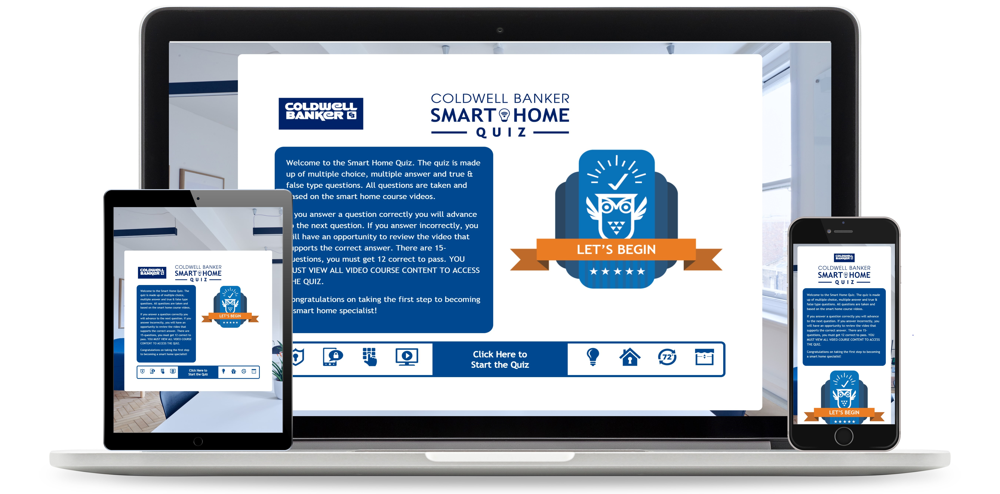
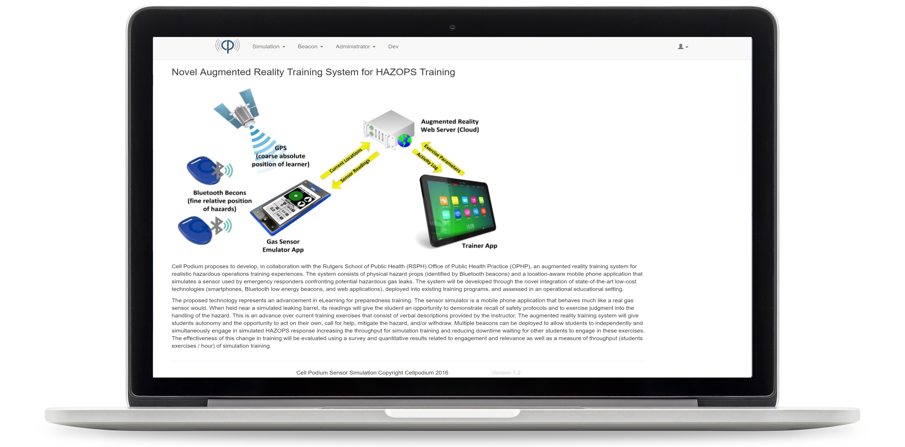
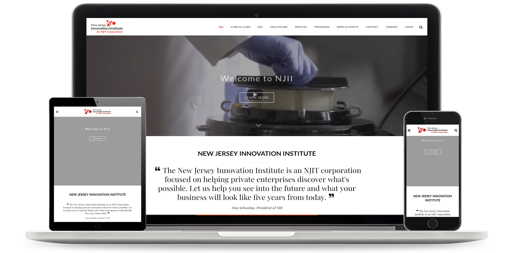
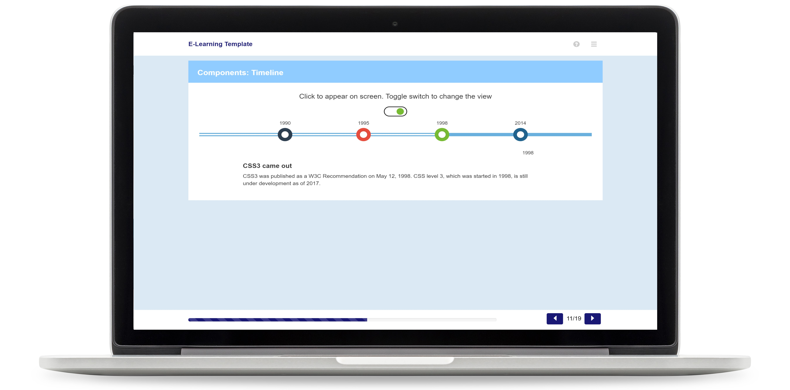
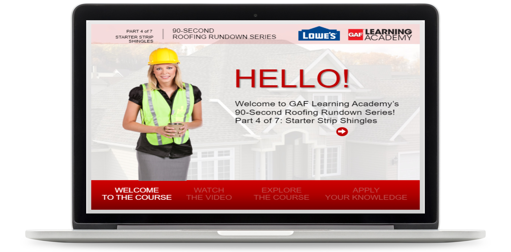
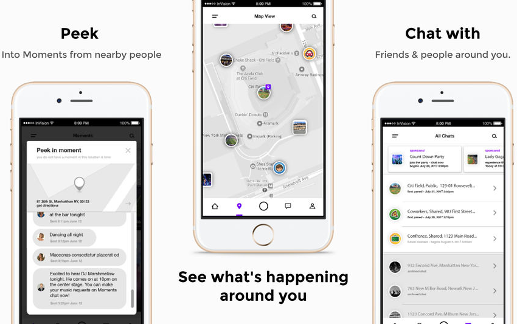

Coldwell Banker Smart Home Course
Interactive Micro-learningColdwell Banker Real Estate, a leading national franchised based reality company selected S&A Technologies to design and develop an interactive micro-learning program on smart home technology. S&A was responsible for interactive & instructional design, scripting, talent, and studio videotaping, motion & animation graphics and editing. S&A employed a responsive design so the program played on all digital devices. The course was delivered to over 10,000 real estate sales person as part of their sales training.
Visit Site
Coldwell Banker Smart Home Quiz
Accompanying the Coldwell Banker training program was a self-assessment quiz to test a learner’s smart home technology knowledge. What made the assessment unique were the use of remedial video loops. For example, if a learner submitted an incorrect answer, they were shown the portion of the video that supported the correct answer.Visit Site


Hazmat
Augmented RealityRutgers School of Public Health had a need to improve their training on hazardous materials - Explosive, Radiation, Oxygen Depletion, etc., and to include field simulations of hazardous incidents. They contracted with Cell Podium to develop a smartphone based HazMat Sensor Training Simulator. The project was funded by a grant from the National Institute of Environmental Health and Science, NIEHS. All design, development and programming was done by S&A Technologies. The sensor replicates real-like hazard material readings found in the field using Android, Bluetooth and iBeacon technology.
Visit Site
Luuva Music
Social MediaLuuva Music came to S&A Technologies with a unique idea to build a social site for musicians, creating a virtual community for singers, writers, retailers and music related businesses. As with any social site it had to scale, be easy to access, anytime anywhere, engaging and personal. A couple of key features of the site included a musician locator and upcoming gigs and performance venues. S&A was responsible for UX/UI design, overall site design and architecture, plus hosting and programming.
Visit Site
Obey Your Doctor
Mobile AppOmar Bey, M.D., FCCP is a board certified pulmonary critical care physician. A native of New Jersey he practices medicine in Newark, working in the profession for 29 years. A newly published author, Dr. OBey’s book titled, “EAT One/Half Make Weight Loss Easy.” S&A Technologies designed and developed a “Eat One/Half” web application for smart-devises. S&A was responsible for UI and UX design, programming and full development.
Visit Site
New Jersey Innovation Council
Website DesignNew Jersey Innovation Institute is an NJIT corporation focused on working with both businesses and government agencies on a wide range of innovative projects. NJII draws on NJIT’s academic resources to help create medical, engineering and information technology solutions. S&A Technologies was selected by NJII’s management to design, build and host its website. S&A was responsible for the technical requirements, UI/UX design and development.
Visit Site


United States Air Force
US Air Force issued an agency wide requirement to standardize the look and feel of its online courses. The challenge they faced was that most courses had a disparate look to them depending who developed them. This caused navigation and user issues when personnel took US Air Force online courses. Through a NJIT DoD grant, S&A Technologies was selected by the USAF to design and build an open source “eLearning template,” so no matter what vendor or internal resource were employed for development, the Air Force’s courses would have a standard user interface and page familiarity. S&A designed in several types of interactivities and page design choices. The template was programed using HTML5.Visit Site
GAF
Micro-learningIf your video content is longer than a minute, you’re not keeping up with the speed of business and might be putting your learners or target audience asleep. S&A Technologies is a leading micro-learning & micro-video design and development company. Micro-videos are short format videos, focused on a single topic or learning objective. Here’s an example of a micro-video, one of a series of training videos produced by S&A Technologies for GAF Building Materials. Each video focused on a specific roofing problem builders might run into when installing GAF shingles. This video covers "Nailing" problems or issues.
Visit Site

MICRO-HYBRID COURSE
Here’s an example of a micro-hybrid course repurposing an existing video. Wrapped the video with an introduction and navigation guide, created an explore the video content, using screen grabs from the video, added a self-checked quiz. Created using a responsive design, so program played on all devices. The result is a micro-hybrid course combining video, self-paced content with quiz.Visit Site
MENSSANA RESEARCH, INC.
Data Science and Technician ToolsS&A Technologies has the unique capabilities to help you take your research initiative from raw study data, through quantitative analysis, to technician-facing software utilities and end-user software products and services. We have a longstanding relationship with Menssana Research, Inc., for whom we have not only developed research technician software interfaces, but actually provided expertise in statistical modelling and first principles physical understanding of their chromatographic data collection devices.
Visit Site


MOMENTS BY TUORBIT
Let us help you design and develop your next social network iOS or Android app. Moments by TuOrbit is a new and fun mode of communicating and socializing with people around you. It is a perfect platform for businesses and event planners to stay connected with their audience with minimal effort. It is a new way to meet people around you and see what's happening nearby.Visit Site